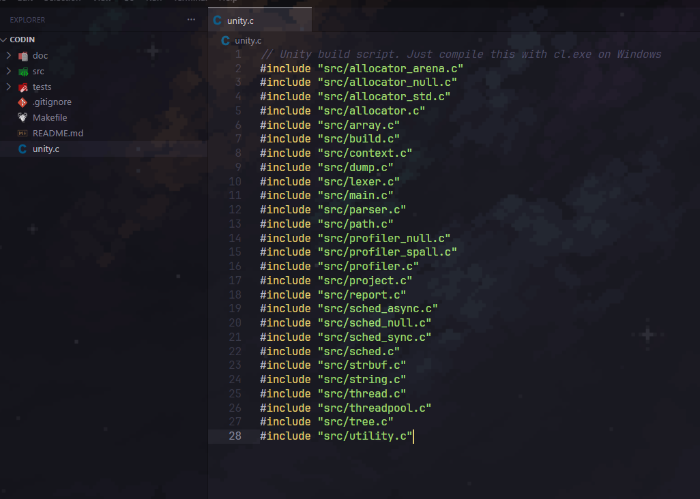

Headers
-
"Every time you create a cpp file, you have to create a corresponding header file, and you have to make sure that they are synchronized at all times; that's really annoying, every time I have to mirror a cpp file with a header file, it feels like I'm filling useless lab reports"
-
That's a common complaint about the traditional C++ compilation model.
-
The .h file is effectively a manually maintained interface description, while the .cpp file is the implementation. The compiler doesn't infer one from the other, so every time you add, remove, or change a public declaration, you have to update both.
-
The synchronization burden gets worse as projects grow:
-
Rename a function → update both files.
-
Change a parameter → update both files.
-
Add a class member → update both files.
-
Move things between public/private → update both files.
-
Keep includes consistent in both files.
-
-
It's easy to forget one, and the compiler only tells you after the fact.
-
This is one of the reasons languages with a single source of truth (Go, Rust, Odin, Zig, C#, Java, etc.) feel much lighter to work with. The implementation itself is the declaration, so there is no "mirror document" to maintain.
-
C++ has tried to improve this over the years. Templates are often implemented entirely in headers, which eliminates the split (at the cost of other complications). More recently, C++20 introduced modules, whose goal is largely to replace textual headers with compiler-understood interface units, reducing duplication and improving build times. Adoption, however, has been gradual due to compiler and build system support.
-
Your comparison to "filling useless lab reports" captures how many developers perceive header maintenance: it's metadata about the code that must be kept in sync by hand, rather than information the compiler could derive automatically. The historical reason is that C++ inherited C's separate compilation model from the 1970s, where this tradeoff made sense given the hardware and compiler technology of the time. Today, many developers see it as one of the language's most persistent ergonomic costs.
-
Header Files Generation
Header Guards
-
#pragma oncein.hfiles.
#ifndef SOMETHING
#define SOMETHING
// code
#endif
Translation Units
extern
(C89) / (C++98)
-
A declaration tells the compiler something exists.
int foo;
-
Surprisingly, in C, this is actually both a declaration and a definition. It allocates storage.
.data
foo:
4 bytes
-
Now consider:
extern int foo;
-
This is only a declaration.
-
"Somewhere, there is an int foo. Trust me."
-
No storage is allocated.
-
Functions already default to
externallinkage :
void hello(void);
-
means
extern void hello(void);
Unity Build
-
Include all files you use in the
main.cfile. -
No uses of
.hfiles. -
Just compile with
clang main.cand that's it. -
Example:
-

.
-
Modules
Compiler Flags
C
Clang
-
clang -std=c++23 -Wall -Werror file.c -
-std=c23-
C23.
-
-
-Wall-
Enable all warning.
-
-
-Werror-
Treat warning as errors.
-
C++
Clang
-
clang++ -std=c++23 -Wall -Werror file.cpp -
clang -std=c++23 -Wall -Werror file.cpp-
If the file extension is .cpp, Clang switches to C++ mode automatically.
-
-
-std=c23-
C23.
-
-
-Wall-
Enable all warning.
-
-
-Werror-
Treat warning as errors.
-